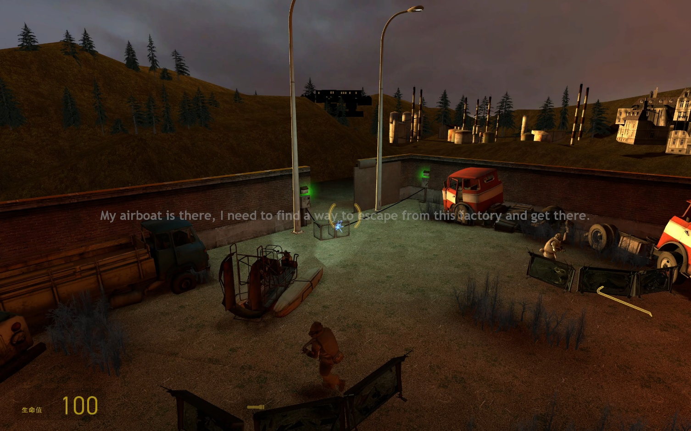
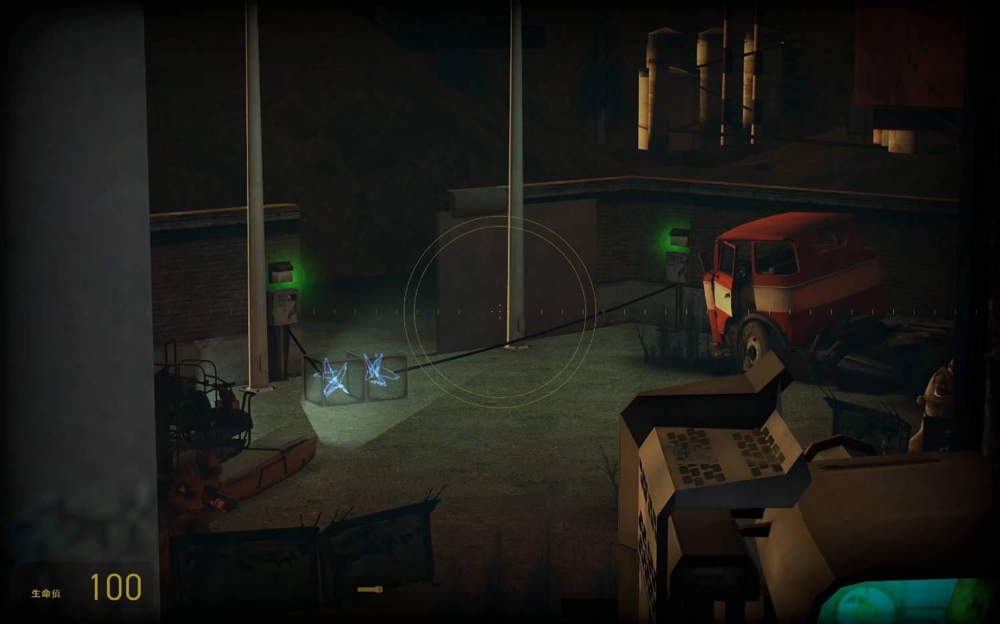
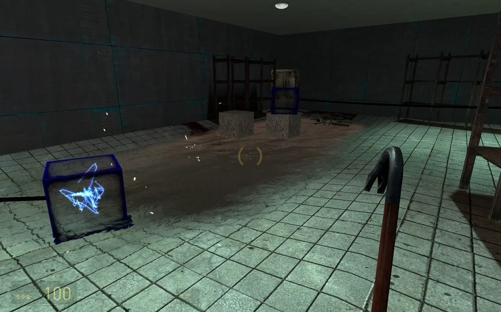
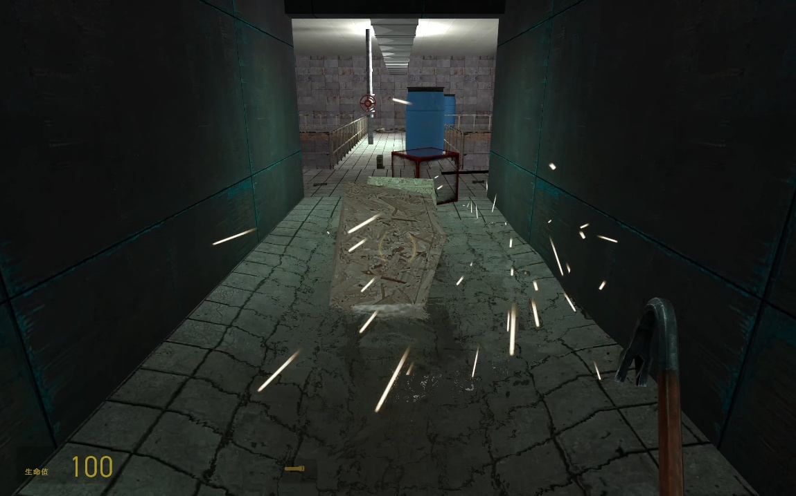
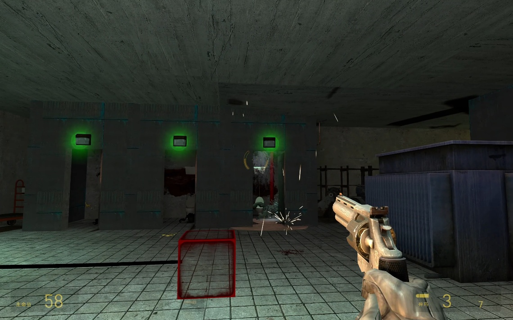
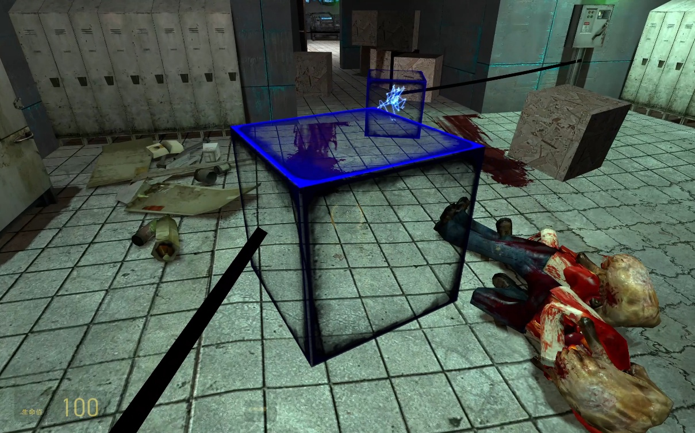
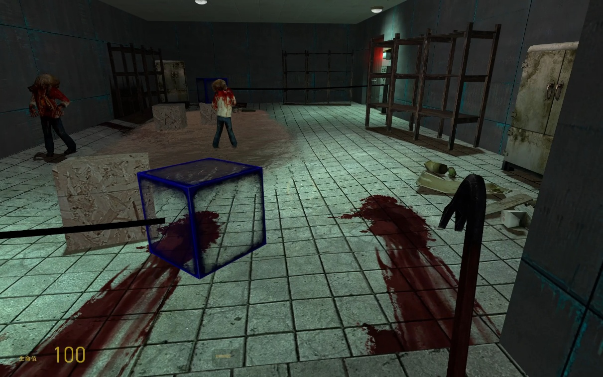

逃出电厂
Escape from Power Plant
《半衰期 2》支线任务与电路谜题设计
项目速览
我的核心工作
- 从导电规则发展出距离、介质、顺序与组合谜题。
- 用场景演出和一致的视觉反馈完成无文字教学。
- 组织“学习—巩固—突破—结合”的难度曲线。
项目概览
该关卡是一个《半衰期 2》支线任务，主要用于训练谜题设计：如何使用场景演出来暗示玩家，如何设置 conveyance 来引导玩家，如何通过关卡初始布局向玩家传递信息，以及如何重复利用有限资源完成解谜。核心机制类似《塞尔达传说》中的电之神庙：玩家需要使用导电金属块连接电路，最终逃出工厂。
关卡布局
关卡布局围绕电路机制的学习顺序展开。战斗区域、谜题房间、上下层空间与可回收资源被安排在同一条连续流程中，让玩家能够先观察目标，再学习规则，最后把前面使用过的资源带入后续谜题。

目标 1：机制设计
如何筛选出好的机制
传达性：作为《半衰期 2》的衍生关卡，机制需要符合当前世界观。《半衰期 2》包含大量物理模拟，因此机制最好与现实世界的物理现象结合，尽可能符合玩家直觉。在我的几个备选方案中，电路谜题虽然没有在原版中出现过，却最符合这个世界观的设定。
优雅度：电路谜题的基础操作只是把两个冒着电火花的电路连接起来。这个动作足够简单，适合在教学初期快速建立规则。
涌现性：机制还需要有足够潜力衍生出更多玩法。把两个物体连接起来，可以进一步发展为距离谜题、介质传递谜题、对应关系谜题、顺序谜题和时间谜题。
如何挖掘机制的潜力
逻辑门：如果谜题目前使用的是 AND 关系，就继续思考 OR 或 NOT 是否也能成为玩法的一部分。
时间与空间维度：从距离或时间维度限制玩家可使用的资源，使同一套连接规则产生新的解法。
顺序与数量：继续推演多个电路同时出现时会形成怎样的谜题，以及连接数量和连接顺序如何改变结果。
如何围绕机制设计关卡背景
叙事：玩家为什么会在这个地方使用这套机制，并完成这件事？
玩家直觉：场景必须清楚区分哪些物体可以利用，哪些物体只是环境的一部分。
氛围：机制带给玩家的心理体验是紧张还是休闲，也会影响空间和节奏的安排。
地编：环境美术需要补充机制与叙事，但最重要的是不能干扰谜题，也不能放置看起来可以互动、实际上却无法互动的物体。
目标 2：谜题设计
谜题教学顺序与关卡规划
我将谜题的学习顺序分为四步：A. 玩家直接使用电线导电；B. 玩家使用水导电；C. 玩家使用水让不同的电线相互连通，并掌握电线的颜色对应关系；D. 玩家按照正确的连接顺序通关。通过“学习、巩固、突破、结合”四个步骤，谜题难度层层递进，而不是突然把多个规则同时交给玩家。

预见性的目标与场景信息传达
关卡开始时，我通过过场动画向玩家展示最终目标：两个冒着电火花的方块相互连接，绿色灯光表示电路已经连通，工厂大门保持开启，同时敌人在下方巡逻。玩家在真正开始操作前，就已经看到机制、反馈、目标与危险之间的关系。


为了告知玩家水可以导电，我把教学嵌入场景演出：玩家想拿到第一关的电线，就一定会看到一个僵尸冲向玩家，并被冒着电火花的水面电死。规则通过事件直接展示，而不是依靠文字说明。

红色灯光与紧闭的大门用来标记当前谜题的目标。后续关卡始终保持这一视觉语言的一致性：只要玩家看到红灯，就知道这里需要供电。

强制性教学
如果希望玩家真正掌握一种基础交互，就必须让它成为继续前进的必要条件。我想让玩家知道木箱可以搬动，就用木箱堵住路线；玩家必须搬开木箱才能继续。类似地，玩家必须破坏木板才能前进，从而自然学会“木板可以被破坏”。

一致性的 Conveyance
我在整个关卡中保持 conveyance 的一致性：绿色灯光表示电线已经通电，红色灯光表示该位置仍然需要供电；电火花则始终意味着危险和伤害。这样，玩家在后续遇到更复杂的谜题时，不需要重新猜测基础视觉语言。


迷惑点设计
迷惑点的作用不是随意增加难度，而是引发逻辑思考，并借机传达更深层的机制信息。我希望玩家理解“蓝色电线必须与蓝色电线相连，红色电线必须与红色电线相连，电流才能通过”，因此设置了红线与蓝线已经连接、灯光却没有变绿的状态。玩家看到基础操作已经完成但反馈没有出现，就会开始思考颜色对应关系。

玩家已经学会通电的水会造成伤害，但关卡又要求玩家必须穿过这片水。此时玩家需要回忆之前学过的知识：木箱可以搬动，因此可以用木箱垫脚，避开水面的伤害。新的谜题不是引入无关机制，而是组合已经完成教学的规则。

锁钥嵌套结构与资源重复利用
锁钥嵌套在解谜关卡中非常常见。简单来说，玩家无法直接解开最终谜题：玩家拥有一把 A 钥匙和两把 A 锁，需要先用 A 钥匙获得 B 钥匙，再用 B 钥匙打开 B 锁，同时释放 A 钥匙去打开另一把 A 锁。它的核心是逐步解除资源限制。
在我的关卡中，玩家若想通过前面出现的通电水域，就必须搬运箱子；但为了开门，玩家已经让原本安全的水域通电。因此玩家需要先断电让门关闭，把箱子取出来，再重新通电开门。这样，原本分开的两个谜题通过同一组资源合并成一个完整关卡。


在最后一个谜题中，玩家会发现红色电线始终不够长。我利用空间的垂直关系，以及第一关破损的水管和楼下漏水的天花板，告诉玩家：第一关通向第二关的电源现在已经不再需要，可以回收并用于第四关。至此，各个谜题不再是孤立房间，而是通过资源回收完全关联起来。玩家不断利用已有资源解决不同谜题，才能最大程度挖掘机制的潜力。


错误假设
错误假设可以打破玩家的固有思维，并趁机引入更深层的机制。第一关刚刚教学玩家“使用方块相连就能通电”；第二关却提供了有限的电线长度，玩家无论如何尝试都无法直接连接两个方块。房间中央同时出现了一片水，这会促使玩家重新检查已经学到的信息，并意识到：只要把两个方块都放入水中，就可以利用水作为导电介质延长连接距离。

